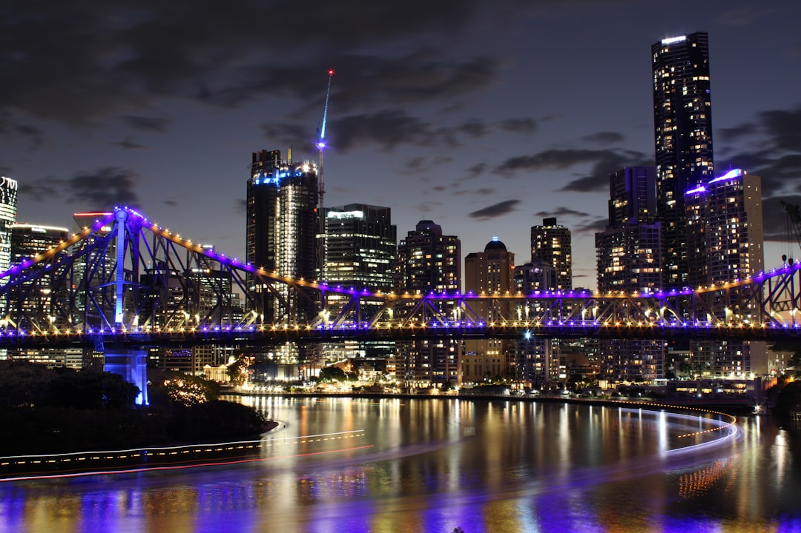

A brochure website in Brisbane commonly costs $2,500 to $7,500 and takes 4 to 10 weeks. A lead-focused build runs $7,500 to $15,000 over 6 to 10 weeks. eCommerce and custom projects start higher, from around 12 weeks up to several months, mostly driven by product catalogue setup, payment integration and content readiness.
For local buyers, web design brisbane covers what it actually costs, how long it takes, and what to check before you commit to a builder. See Web Design Brisbane Australia for the current service details.
Web Design Brisbane Explained
Pricing varies a lot depending on scope. A straightforward brochure website for a small business commonly costs between $2,500 and $7,500, while a more polished, lead focused build usually sits between $7,500 and $15,000. eCommerce stores and heavily customised projects start higher again, mostly because of product catalogue setup, payment integration and custom design work.
Firms such as Web Design Brisbane Australia publish indicative pricing up front so business owners can budget before committing to a scope. That kind of transparency is worth asking for from any Brisbane web design provider business owners are considering, since vague quotes make it hard to compare like for like.
How long a build actually takes
Timeframes track roughly with cost. A simple brochure site is commonly around 4 to 10 weeks. A WordPress or small business build usually runs 6 to 10 weeks. eCommerce or heavily custom work starts from about 12 weeks and can stretch to several months.
- Content and imagery being ready on day one shortens every stage
- Feedback turnaround on drafts is usually the biggest variable
- Payment gateway and product data entry add time to eCommerce builds
Ask any Brisbane web design provider what happens to the timeline if content is late, since that is where most projects slip.
Local designer or national agency
A local team understands the Brisbane market, from inner-city precincts like Fortitude Valley, Newstead and West End to suburban centres like Toowong, Indooroopilly, Chermside, Carindale and Sunnybank. That local knowledge matters for tone, imagery and knowing who your actual customer is. A local designer is also easier to reach in your own time zone when you need changes made quickly.
National or offshore agencies can sometimes undercut on price, but slower response times and generic templates are a common trade off. Neither option is automatically wrong, it depends on how hands on you want the relationship to be.
Choosing a platform: WordPress, Shopify or custom
Most small business sites in Brisbane are built on WordPress, since it is editable without a developer on call and suits brochure and small business sites well. Online stores typically run on Shopify or WooCommerce, chosen for fast load times and built-in trust signals like reviews and secure checkout. Fully custom builds make sense when a business has specific functionality needs that an off the shelf platform cannot handle cleanly.
Whichever platform you choose, ask whether you will be able to edit text, images and pages yourself once the site is live, or whether ongoing changes require a care plan.
Questions worth asking before you sign
A few practical questions separate a good brief from a vague one. Ask what is included in the quoted price, what counts as a revision versus a change of scope, and who owns the domain and hosting once the project is finished. Ask whether the site will be built on solid technical foundations, meaning fast load times, mobile-first layout and clean markup, since that is what gives a new site a fair chance to rank over time.
Be wary of anyone who promises a specific Google ranking position. Under Australian Consumer Law, no business can honestly guarantee a specific search position, only that the underlying site is built to compete fairly.
- Define your goals. Decide whether the site needs to inform, generate leads, or sell products before requesting quotes.
- Compare indicative pricing. Ask each designer for a cost range tied to your specific scope, not a generic package price.
- Check platform and editability. Confirm whether you can update text and images yourself or need a care plan.
- Confirm SEO foundations. Ask about page speed, mobile-first design and clean markup as baseline requirements.
- Agree scope and timeframe. Lock in what counts as a revision and what happens if content arrives late.
| Site type | Typical cost | Typical timeframe |
|---|---|---|
| Small business brochure site | $2,500 to $7,500 | 4 to 10 weeks |
| WordPress or lead focused site | $7,500 to $15,000 | 6 to 10 weeks |
| eCommerce or custom build | Starts higher | 12+ weeks, up to several months |
Common questions
How much does web design cost in Brisbane? A small business brochure site commonly runs from $2,500 to $7,500. A more polished, lead focused build sits closer to $7,500 to $15,000. eCommerce and custom work start higher again.
How long does a Brisbane website build take? A simple brochure site is commonly 4 to 10 weeks, a WordPress or small business site 6 to 10 weeks, and an eCommerce or custom build from about 12 weeks up to several months, depending mostly on how quickly content comes back.
Is a local Brisbane web designer better than a national agency? A local team understands Brisbane suburbs and is easier to reach in your own time zone for changes, though a national agency may offer a lower price with less local context.
Can a web designer guarantee Google rankings? No. Under Australian Consumer Law no business can honestly guarantee a specific ranking position. A well built site with fast load times and clean markup gives it a fair chance to rank.
Will I be able to update my own website? On platforms like WordPress, yes, with training you can edit text, images and pages yourself. If you would rather not, a website care plan covers changes for you.
This guide covers indicative web design costs, build timeframes, platform choices and the questions worth asking before hiring a Brisbane website provider.